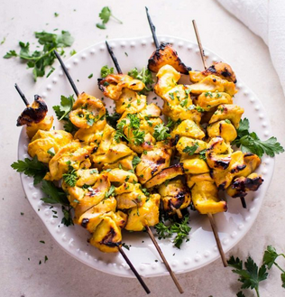

Honey Mustard Chicken Skewers

Ingredients:
- 2 chicken breasts
- 1/2 cup yellow mustard
- 3 tablespoons honey
- 1 clove garlic (minced)
- salt & pepper to taste
- Cut chicken breast into 1-2 inch sized cubes.
- marinate all ingredients in a ziplock bag for at least 2 hours, preferably overnight.
- preheat a grill to high heat. Thread the marinated chicken onto skewers, pouring any remaining marinade over them.
- grill skewers until internal temp. reads 165 F.